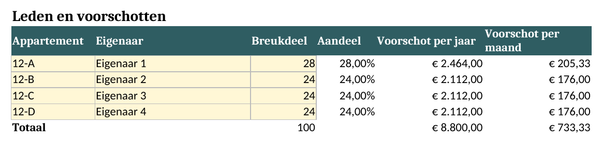
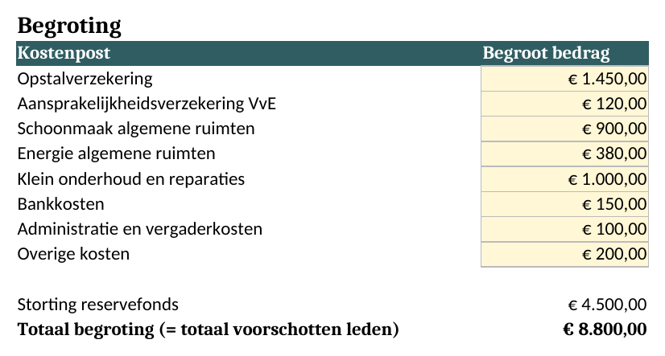
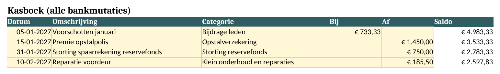
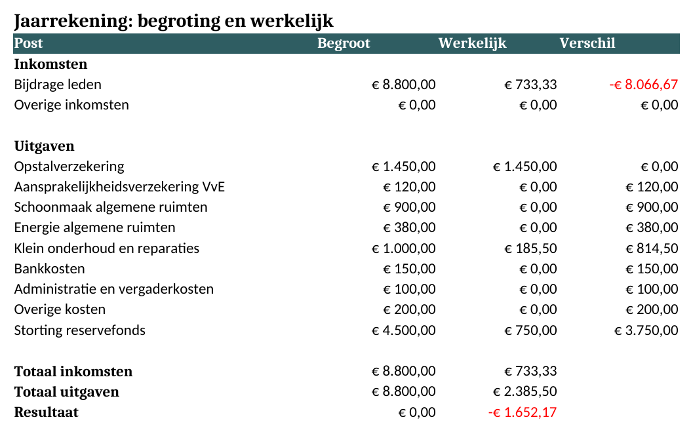
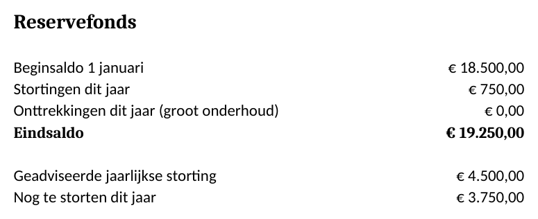
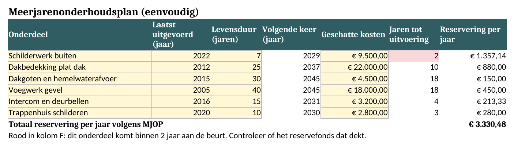

De VvE-kit: wat krijgt u voor €12?
Eén spreadsheet waarmee u de administratie van een kleine VvE bijhoudt: wie wat betaalt, waar het geld heen gaat en hoeveel er opzij moet voor groot onderhoud. U betaalt één keer en houdt het bestand.
In het kort
- Eenmalig €12. Geen abonnement, geen account, geen terugkerende kosten.
- U downloadt twee bestanden: VvE-kit.xlsx (leeg, om zelf in te vullen) en VvE-kit-voorbeeld.xlsx (ingevuld voor een verzonnen VvE met 4 appartementen).
- Werkt in Excel, Google Sheets en LibreOffice. U heeft dus geen extra software nodig.
- Bedoeld voor VvE's met ongeveer 2 tot 12 appartementen die zichzelf beheren. Er is plaats voor 28 appartementen.
Wat zit erin?
De kit heeft acht tabbladen. Gele cellen vult u zelf in; de rest rekent de kit uit. Hieronder ziet u de tabbladen uit het voorbeeldbestand.
1. Instellingen
Naam van de VvE, boekjaar, herbouwwaarde van het gebouw en de beginsaldi. Daaruit berekent de kit hoeveel u minimaal moet reserveren.
2. Leden en voorschotten
Per appartement het breukdeel uit de splitsingsakte. De kit rekent uit welk deel van de kosten iedere eigenaar draagt en wat het voorschot per jaar en per maand is.

3. Begroting
De vaste kosten van het jaar, zoals verzekering, schoonmaak en energie. De storting in het reservefonds wordt automatisch ingevuld.

4. Kasboek
Hier zet u alle bij- en afschrijvingen van de bankrekening van de VvE, met een categorie uit een vaste lijst. Het saldo loopt automatisch mee. Er is plaats voor 200 boekingen per jaar.

5. Jaarrekening
Begroot tegenover werkelijk, per kostenpost. Dit tabblad vult zich vanzelf uit het kasboek en kunt u zo op de ledenvergadering laten zien.

6. Reservefonds
De stand van het reservefonds, wat er dit jaar is gestort en onttrokken, en hoeveel er nog gestort moet worden.

7. Eenvoudig onderhoudsplan (MJOP)
Per onderdeel van het gebouw: wanneer het voor het laatst is gedaan, hoe lang het meegaat en wat het kost. De kit rekent uit wanneer het weer nodig is en hoeveel u daarvoor per jaar moet reserveren. Wat binnen 2 jaar aan de beurt is, kleurt rood.

8. Notulen ALV
Een sjabloon voor de ledenvergadering, met agenda, besluitenlijst en actiepunten.
Daarnaast is er een tabblad Uitleg met de stappen in de goede volgorde.
Wat het niet is
- Geen app of online dienst: het is een bestand dat u zelf bewaart.
- Geen koppeling met de bank: u typt of plakt de bankmutaties zelf in het kasboek.
- Geen juridisch advies: controleer uw splitsingsakte en het reglement.
Hoe werkt kopen?
U betaalt via Gumroad, een bekende winkel voor digitale producten. Na betaling krijgt u direct een downloadlink, ook per e-mail. Dat is alles: u wordt niet automatisch opnieuw gefactureerd.
Koop de VvE-kit voor €12